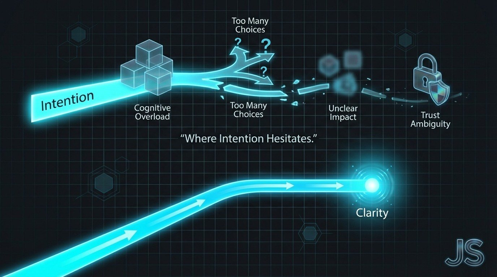

The Creative Shift May 5, 2026
Part II: Reverse Benchmarking
Designing Backwards from Failure

Most founders benchmark competitors to copy what works.
We benchmarked to expose what fails.
Before a single interface decision was made for TreeRaise, we dissected the fundraising industry from the outside in.
Not to imitate.
To subtract.
The Illusion of “Modern” Fundraising
Most fundraising platforms look polished.
Clean UI. Impact counters. Share buttons. Mobile friendly.
But surface design hides structural friction.
When we mapped competitor flows, patterns emerged:
Too many steps before value clarity
Overloaded pages competing for attention
Emotional appeals without structural proof
Impact described, not demonstrated
Donation options presented before trust is earned
Modern design does not equal behavioral intelligence.
And polish does not equal performance.
Mapping Drop-Off Instead of Admiring Design
Reverse benchmarking means asking:
Where does intention collapse?
We analyzed flows through a behavioral lens:
When is impact explained?
When is credibility established?
When does the donation ask appear?
How many cognitive decisions are required before checkout?
Where does ambiguity enter the experience?
In many cases, friction appeared before meaning.
That is backwards.
Humans decide emotionally and justify rationally.
If clarity is delayed, motivation decays.
Trust Leakage
Trust is rarely lost in one moment.
It leaks.
Through vague language. Through unclear cost breakdowns. Through “impact” claims that feel abstract. Through excessive choice.
When donation pages ask for multiple tiers, add-ons, recurring options, tribute fields, and campaign selections all at once, cognitive load spikes.
Choice overload is not generosity-friendly.
The more a user has to process, the less likely they are to complete.
Reverse benchmarking exposed how often platforms optimize for fundraising organization convenience rather than donor psychology.
That was our pivot point.
Subtraction as Strategy
Instead of asking, “What features should we add?”
We asked:
What can we remove?
Remove unnecessary stepsRemove product logistics
Remove abstract impact claims
Remove inventory complexity
Remove administrative burdens
Clarity became the feature.
Transparency became the differentiator.
Simplicity became the growth engine.
Designing Forward from Failure
When you design from first principles, you do not build from best-in-class examples.
You build from exposed weaknesses.
Reverse benchmarking showed us:
Fundraising does not fail because people do not care.
It fails because systems interrupt care with friction.
TreeRaise was built by redesigning the journey in the opposite direction:
Meaning first. Proof second. Action third.
That sequence matters.
One for the Road
Most industries benchmark to keep up.
The best builders benchmark to break patterns.
If you want to innovate, do not study what competitors highlight.
Study where users hesitate.
That hesitation is your opportunity.
Next week, I will break down how we built an AI Modular Stack of Experts to transform research, psychology, cultural segmentation, and growth strategy into one unified system.
The Creative Shift continues.
Want this kind of thinking on your brand?
The Creative Shift is the thinking behind the client work. Book a call, or read the original on LinkedIn.